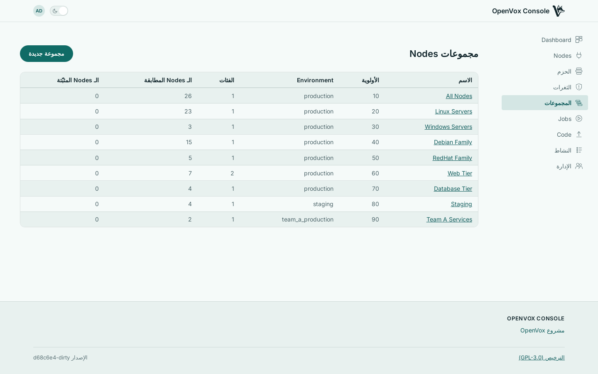

تطابق مجموعات الـ Nodes بناءً على الـ Facts التي تبلّغ عنها Nodes أصلًا، وتسلّم openvox-server الإجابة عبر عقد ENC الذي يتوقعه.
مجموعات تطابق Nodes حقيقية
ابنِ قاعدة من الـ Facts — os.family = Debian، role = web — وتخبرك وحدة التحكم بعدد الـ Nodes التي تطابقها في هذه اللحظة. القاعدة التي لا تلتقط شيئًا تتضح فورًا، لا عند تشغيل Puppet التالي.

أسبقية تقرؤها من الصفحة
حين تنطبق عدة مجموعات على Node واحد، يقرّر رقم واحد أيها يفوز. المجموعات مسطّحة ولكل منها أولوية صريحة، فمعرفة سبب حصول Node على فئة ما تعني قراءة قائمة، لا تتبّع شجرة وراثة.
الـ Node الذي لم يسجّل وصوله قط ليست لديه Facts بعد، فلا يمكن لأي قاعدة قائمة على الـ Facts أن تطابقه. ثبّته في مجموعة مباشرة إذا كان يحتاج إلى تصنيف قبل تشغيله الأول.
يُشحن OpenVox Console بصورتَي حاوية، مبنيّتين لـ amd64 وarm64 مع كل عملية push. ويرشدك SETUP.md عبر نشر حقيقي — openvoxserver وopenvoxdb وPostgres ووحدة التحكم — بتعليمات للحاويات وللحزم معًا.